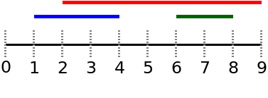
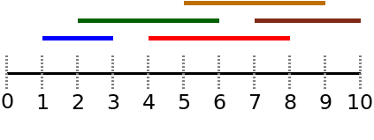

In what concerns the continuous evaluation solving exercises grade during the semester, you should submit until 23:59 of November 1st
(this exercise will still be available for submission after that deadline, but without couting towards your grade)
[to understand the context of this problem, you should read the class #04 exercise sheet]
The largest computer lab in your university is being intensively used by the students trying to solve all problems. You keep a record of the (distinct) arrival and leaving times of each student and you would like to know the maximum number of students that were at the lab at the same time.
Imagine you have three students:
This corresponds to the figure below and the maximum number of students at the same time in the lab is 2 (in interval [2,4] students 1 and 3 and in interval [6,8] students 2 and 3)

Given the (all distinct) arrival and leaving times of N students, your task is to determine what is the maximum number of students that were in the lab at the same time.
The first input line contains an integer N: the number of students to consider.
The following N lines give the arrival time Ai and the leaving time Li of the students. You may assume that all arrival and leaving times are distinct integers.
The output should be a line containing the maximum number of students that were in the lab at the same time.
The following limits are guaranteed in all the test cases that will be given to your program:
| 1 ≤ N ≤ 2 × 105 | Number of students | |
| 1 ≤ Ai < Li ≤ 109 | Arrival and leaving times |
| Example Input 1 | Example Output 1 |
3 1 4 6 8 2 9 |
2 |
The first example corresponds to the figure given in the problem statement.
| Example Input 2 | Example Output 2 |
5 5 9 7 10 2 6 1 3 4 8 |
3 |
The second example corresponds to the following figure (with a maximum of 3 students at the same time):
